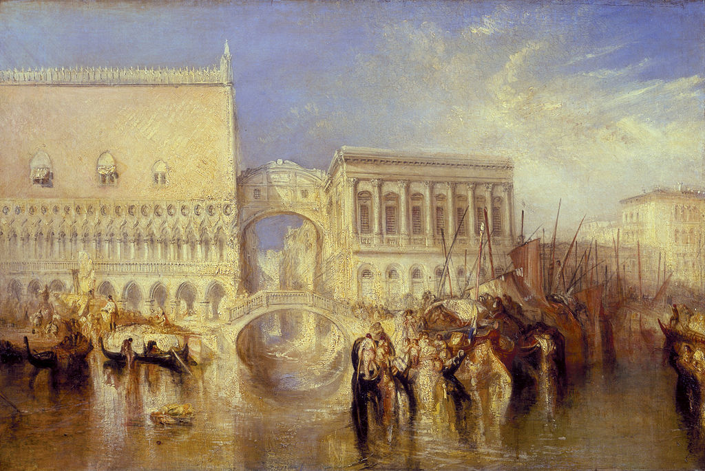

<head>
<meta charset="UTF-8" />
<meta name="keywords" content="drawing, painting" />
<meta name="description" content="drawings by Sunjy" />
<title>Sunjy</title>
<link rel="shortcut icon" type="image/x-icon" href="../../mImages/mCommon/favicon.ico" media="screen" />
<link rel="stylesheet" type="text/css" href="../../mCsses/mCommon/mCssA.css" />
<link rel="stylesheet" type="text/css" href="../../mCsses/mCommon/mCssB.css" />
<link rel="stylesheet" type="text/css" href="../../mCsses/mCommon/mCssC.css" />
<link rel="stylesheet" type="text/css" href="../../mCsses/mCommon/mCssD.css" />
<link rel="stylesheet" type="text/css" href="../../mCsses/mContent/mCssA.css" />
<link rel="stylesheet" type="text/css" href="../../mCsses/mContent/mCssB.css" />
<link rel="stylesheet" type="text/css" href="../../mCsses/mContent/mCssC.css" />
<link rel="stylesheet" type="text/css" href="../../mCsses/mContent/mCssD.css" />
</head>
<script type="text/javascript" src="../../mScripts/mContent/mContentAA.js" /></script>
<script type="text/javascript" src="../../mScripts/mContent/mContentAB.js" /></script>
<script type="text/javascript" src="../../mScripts/mContent/mContentAC.js" /></script>
<script type="text/javascript" src="../../mScripts/mContent/mContentAD.js" /></script>
<script type="text/javascript"></script> 
<script type="text/javascript">
document.write('<div class="mImgAbsolute"></div>');
/*
document.write('<p class="mFontSizeBColor" />From a white paper...</p>');
document.write('<table class="center"><tr><td>');
document.write('');
document.write('</td></tr></table>');
*/
</script>


<script type="text/javascript">
document.write('<p class="mFontSizeBColor" />Venice, the Bridge of Sighs</p>');
document.write('<p class="mFontSizeSColor" />“Venice, the Bridge of Sighs” by J. M. W. Turner depicts several famous landmarks in Venice. The enclosed “Bridge of Sighs” connects the Doge’s Palace on the left with the prisons of the Palazzo dei Prigioni to the right.<br><br>The Bridge of Sighs is an enclosed arch bridge made of white limestone, which was built in 1600.<br><br>The Bridge of Sighs crossed the Rio di Palazzo waterway and has windows with stone bars. It connects the New Prison to the interrogation rooms in the Doge’s Palace.<br><br>The Doge’s Palace is a palace built in Venetian Gothic style and was the residence of the Doge of Venice, the supreme authority of the former Venetian Republic.<br><br>It was founded in 1340, and extended and modified in the following centuries.<br><br>When Turner exhibited the painting in 1840, he accompanied it with lines based on Byron’s poem, Childe Harold’s Pilgrimage:<br><br>“I stood upon a bridge, a palace and<br>A prison on each hand.”<br><br>Indeed it was Byron who coined the name of the bridge. He derived its title from the mournful image of convicts taking their last glimpse of the city and freedom before being led down to the darkness of the cells.<br><br>Bridge of Sighs<br><br>The view from the Bridge of Sighs was the last view of Venice that convicts saw before their imprisonment. The bridge’s English name was bequeathed by Lord Byron in the 19th century.<br><br>It was a translation from the Italian “Ponte dei sospiri” from the suggestion that prisoners would sigh at their final view of Venice through the window before being taken down to their cells.<br><br>In reality, little could be seen from inside the 11 meter (36 ft) long bridge due to the stone grills covering the windows. Closed and covered, it consists of two corridors separated by a wall. <br><br>One corridor connects the Prisons to the main floor of the Doge’s Palace.  The other corridor connects the Prisons with the Avogaria Rooms and with the Parlor.<br><br>The Doge’s Palace, home to all the governmental institutions of the Republic, including those of Justice, and the places of punishment and detention.<br><br>The new building beyond the Rio di Palazzo was constructed to take these prison functions, with rooms for use by the magistrates.<br><br>The construction of these New Prisons, connected to the Palace with the subsequent creation of the Bridge of Sighs.<br><br>The New Prisons represent one of the first examples in Europe, of an isolated, single-block building, as a state prison.<br></p>');
document.write('<table class="center" /><tr><td>');
document.write('<br>The Bridge of Sighs is an enclosed arch bridge made of white limestone, which was built in 1600.<br><br>The Bridge of Sighs crossed the Rio di Palazzo waterway and has windows with stone bars. It connects the New Prison to the interrogation rooms in the Doge’s Palace.<br><br>The Doge’s Palace is a palace built in Venetian Gothic style and was the residence of the Doge of Venice, the supreme authority of the former Venetian Republic.<br><br>It was founded in 1340, and extended and modified in the following centuries.<br><br>When Turner exhibited the painting in 1840, he accompanied it with lines based on Byron’s poem, Childe Harold’s Pilgrimage:<br><br>“I stood upon a bridge, a palace and<br>A prison on each hand.”<br><br>Indeed it was Byron who coined the name of the bridge. He derived its title from the mournful image of convicts taking their last glimpse of the city and freedom before being led down to the darkness of the cells.<br><br>Bridge of Sighs<br><br>The view from the Bridge of Sighs was the last view of Venice that convicts saw before their imprisonment. The bridge’s English name was bequeathed by Lord Byron in the 19th century.<br><br>It was a translation from the Italian “Ponte dei sospiri” from the suggestion that prisoners would sigh at their final view of Venice through the window before being taken down to their cells.<br><br>In reality, little could be seen from inside the 11 meter (36 ft) long bridge due to the stone grills covering the windows. Closed and covered, it consists of two corridors separated by a wall. <br><br>One corridor connects the Prisons to the main floor of the Doge’s Palace.  The other corridor connects the Prisons with the Avogaria Rooms and with the Parlor.<br><br>The Doge’s Palace, home to all the governmental institutions of the Republic, including those of Justice, and the places of punishment and detention.<br><br>The new building beyond the Rio di Palazzo was constructed to take these prison functions, with rooms for use by the magistrates.<br><br>The construction of these New Prisons, connected to the Palace with the subsequent creation of the Bridge of Sighs.<br><br>The New Prisons represent one of the first examples in Europe, of an isolated, single-block building, as a state prison.<br>" />');
document.write('</td></tr></table>');
</script>


